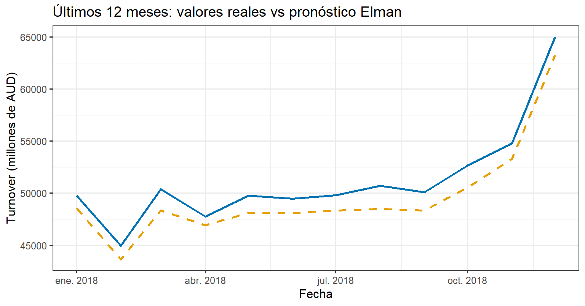
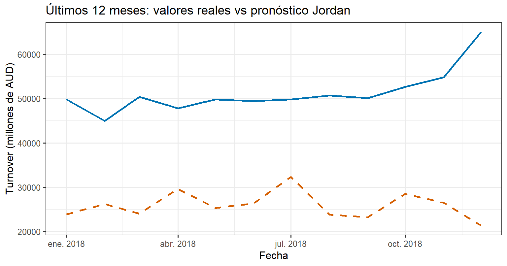

8 Unidad 7: Redes neuronales recurrentes Elman y Jordan
En esta unidad se incorporan dos arquitecturas clásicas de redes neuronales recurrentes (RNR) para el pronóstico de series de tiempo: la red de Elman y la red de Jordan. El objetivo es:
- Utilizar la misma serie mensual Australia Monthly Retail Turnover empleada en las unidades anteriores.
- Construir un conjunto de datos supervisado basado en rezagos (valores pasados de la serie como entradas).
- Entrenar redes Elman y Jordan sobre un conjunto de entrenamiento.
- Generar pronósticos a 12 meses y evaluar su desempeño mediante RMSE, MAE y MAPE.
8.1 Fundamentos teóricos: redes Elman y Jordan
Las redes neuronales recurrentes permiten modelar dependencias temporales al incorporar conexiones de retroalimentación que conservan información del pasado. Dos variantes clásicas son:
- Red de Elman: introduce una capa de contexto que recibe las salidas de la capa oculta en el tiempo \(t-1\).
- Red de Jordan: la capa de contexto recibe retroalimentación de la salida de la red en el tiempo anterior.
En forma simplificada, una red recurrente tipo Elman puede escribirse como:
\[ \begin{aligned} \mathbf{h}_t &= f\left( W_{xh}\mathbf{x}_t + W_{hh}\mathbf{h}_{t-1} + \mathbf{b}_h \right),\\ \hat{y}_t &= g\left( W_{hy}\mathbf{h}_t + \mathbf{b}_y \right), \end{aligned} \]
donde: - \(\mathbf{x}_t\) es el vector de entradas (rezagos de la serie), - \(\mathbf{h}_t\) es el estado oculto, - \(\hat{y}_t\) es la salida pronosticada, - \(f(\cdot)\) y \(g(\cdot)\) suelen ser funciones de activación no lineales.
En las redes Elman y Jordan el tiempo entra de forma indirecta: el modelo aprende una función no lineal \(\hat{y}_t = F(y_{t-1}, y_{t-2}, \dots, y_{t-p})\), donde los valores pasados de la serie actúan como regresores. Por tanto, estas arquitecturas pueden entenderse como modelos de regresión no lineal en el tiempo.
8.2 Preparación del conjunto supervisado y partición train/test
Se construyó un conjunto de datos supervisado donde las entradas son los 12 rezagos mensuales de la serie y la salida es el valor en el mes actual. Se mantiene la misma partición temporal que en las unidades anteriores: los últimos 12 meses se reservan como conjunto de prueba (test).
suppressPackageStartupMessages({
library(RSNNS)
library(dplyr)
library(knitr)
})
# Horizonte de evaluación
h <- 12L
n <- length(ts_y)
# Partición train/test (últimos 12 meses como prueba)
ts_train <- window(ts_y, end = time(ts_y)[n - h])
ts_test <- window(ts_y, start = time(ts_y)[n - h + 1])
# Conversión a vector numérico
y_all <- as.numeric(ts_y)
# Número de rezagos utilizados como entradas
lag_input <- 12L
# Construir matriz supervisada con embed:
# 1ª columna = y_t (objetivo), resto = rezagos y_{t-1},...,y_{t-12}
X_mat <- embed(y_all, lag_input + 1)
colnames(X_mat) <- c("y_t", paste0("lag_", lag_input:1))
y_target <- X_mat[, "y_t"]
X_inputs <- X_mat[, -1, drop = FALSE]
# Posición temporal de cada fila respecto a la serie original
pos_out <- (lag_input + 1):n
# Índices de filas que caen en train y en test (según posición del y_t)
train_end <- length(ts_train)
idx_train <- which(pos_out <= train_end)
idx_test <- which(pos_out > train_end)
X_train <- X_inputs[idx_train, ]
X_test <- X_inputs[idx_test, ]
y_train <- y_target[idx_train]
y_test <- y_target[idx_test]
# Estandarización basada en el conjunto de entrenamiento
x_center <- apply(X_train, 2, mean)
x_scale <- apply(X_train, 2, sd)
X_train_sc <- scale(X_train, center = x_center, scale = x_scale)
X_test_sc <- scale(X_test, center = x_center, scale = x_scale)
y_mean <- mean(y_train)
y_sd <- sd(y_train)
y_train_sc <- as.numeric(scale(y_train, center = y_mean, scale = y_sd))8.3 Entrenamiento de la red Elman
Se ajusta una red Elman usando como entradas los 12 rezagos y como salida el valor actual de la serie (todo estandarizado).
library(RSNNS)
set.seed(123) # para reproducibilidad
elman_net <- elman(
x = X_train_sc,
y = y_train_sc,
size = 8, # neuronas ocultas
learnFuncParams = c(0.2),
maxit = 500
)
elman_net # para ver el resumen que ya te salió## Class: elman->rsnns
## Number of inputs: 12
## Number of outputs: 1
## Maximal iterations: 500
## Initialization function: JE_Weights
## Initialization function parameters: 1 -1 0.3 1 0.5
## Learning function: JE_BP
## Learning function parameters: 0.2
## Update function:JE_Order
## Update function parameters: 0
## Patterns are shuffled internally: FALSE
## Compute error in every iteration: TRUE
## Architecture Parameters:
## $size
## [1] 8
##
## All members of model:
## [1] "nInputs" "maxit" "initFunc"
## [4] "initFuncParams" "learnFunc" "learnFuncParams"
## [7] "updateFunc" "updateFuncParams" "shufflePatterns"
## [10] "computeIterativeError" "snnsObject" "archParams"
## [13] "IterativeFitError" "fitted.values" "nOutputs"8.4 Pronóstico con la red Elman
En esta sección vamos a:
Usar la red Elman ya entrenada (elman_net).
Obtener el pronóstico para los últimos 12 meses (conjunto de prueba).
Calcular RMSE, MAE y MAPE.
Generar un gráfico comparando valores reales vs pronosticados.
# Predicciones de la red Elman en el conjunto de prueba (últimos 12 meses)
pred_elman_sc <- predict(elman_net, X_test_sc)
pred_elman_sc <- as.numeric(pred_elman_sc)
# Volver a la escala original (des-estandarizar)
y_pred_elman <- pred_elman_sc * y_sd + y_mean
# Construir tabla con fechas, valor real y pronóstico
library(zoo) # por si no está cargado
fechas_test <- as.Date(as.yearmon(time(ts_test)))
res_elman <- data.frame(
Fecha = fechas_test,
Real = as.numeric(ts_test),
Elman = y_pred_elman
)
# Métricas de error
rmse_elman <- sqrt(mean((res_elman$Real - res_elman$Elman)^2))
mae_elman <- mean(abs(res_elman$Real - res_elman$Elman))
mape_elman <- mean(abs((res_elman$Real - res_elman$Elman) / res_elman$Real)) * 100
metrics_elman <- data.frame(
Modelo = "Red Elman",
RMSE = rmse_elman,
MAE = mae_elman,
MAPE = mape_elman
)
knitr::kable(
metrics_elman,
caption = "Métricas de error de la red neuronal Elman sobre el horizonte de 12 meses.",
digits = 2,
align = "c"
)| Modelo | RMSE | MAE | MAPE |
|---|---|---|---|
| Red Elman | 1646.15 | 1601.22 | 3.12 |
# Gráfico: valores reales vs pronosticados
library(ggplot2)
ggplot(res_elman, aes(x = Fecha)) +
geom_line(aes(y = Real), color = "#0072B2", linewidth = 1) +
geom_line(aes(y = Elman), color = "#E69F00", linewidth = 1, linetype = "dashed") +
labs(
title = "Últimos 12 meses: valores reales vs pronóstico Elman",
x = "Fecha",
y = "Turnover (millones de AUD)"
) +
theme_bw(base_size = 12)
Interpretación de los resultados de la red Elman
Los resultados de la red neuronal recurrente tipo Elman muestran un desempeño moderado en el pronóstico de los últimos 12 meses del Retail Turnover australiano. La Tabla 8.1 presenta las métricas obtenidas:
RMSE = 1646.15
MAE = 1601.22
MAPE = 3.12%
Estas métricas indican que, aunque la red es capaz de capturar parte de la dinámica general de la serie, su error es considerablemente mayor comparado con modelos clásicos como Holt–Winters o ARIMA, los cuales tenían errores alrededor de RMSE ≈ 380–410.
La Figura de valores reales vs pronóstico Elman evidencia que la red Elman reproduce adecuadamente la dirección general del movimiento, especialmente en los meses medios del período de evaluación; sin embargo:
Tiende a subestimar los valores reales, especialmente cuando la serie presenta incrementos pronunciados.
La red suaviza demasiado las oscilaciones, lo cual es consistente con el comportamiento típico de redes recurrentes entrenadas con pocos datos recientes.
El mayor desajuste se observa en los dos últimos meses, donde la serie real experimenta un crecimiento abrupto que la red no logra anticipar.
Este comportamiento puede explicarse porque las redes Elman requieren más información temporal o un número mayor de neuronas/capas para capturar variaciones pronunciadas en series altamente estacionales y crecientes. Además, a diferencia de Prophet o ARIMA, la arquitectura no incorpora explícitamente una modelación de estacionalidad ni tendencia, lo que reduce su capacidad predictiva en este tipo de datos económicos.
En resumen, la red Elman funciona, pero su precisión es inferior a la de otros modelos utilizados previamente en el documento. Esto sugiere que, para este tipo de serie temporal, los modelos clásicos con estructura estacional explícita tienden a generalizar mejor en horizontes cortos de pronóstico.
8.5 Entrenamiento de la red neuronal Jordan
La red Jordan es otra arquitectura clásica de redes neuronales recurrentes. A diferencia de Elman, la retroalimentación proviene de la salida retrasada de la red, por lo que el modelo aprende patrones temporales usando como referencia sus propias predicciones pasadas.
Al igual que con la red Elman, se entrena un modelo usando los 12 rezagos de la serie como entradas, y se evaluará su desempeño sobre los últimos 12 meses de la serie.
# Entrenamiento de la red Jordan
set.seed(123)
jordan_net <- jordan(
X_train_sc,
y_train_sc,
size = 8, # número de neuronas ocultas (igual que Elman para comparar)
learnFunc = "Std_Backpropagation",
learnFuncParams = c(0.2),
maxit = 500
)
jordan_net## Class: jordan->rsnns
## Number of inputs: 12
## Number of outputs: 1
## Maximal iterations: 500
## Initialization function: JE_Weights
## Initialization function parameters: 1 -1 0.3 1 0.5
## Learning function: Std_Backpropagation
## Learning function parameters: 0.2
## Update function:JE_Order
## Update function parameters: 0
## Patterns are shuffled internally: FALSE
## Compute error in every iteration: TRUE
## Architecture Parameters:
## $size
## [1] 8
##
## All members of model:
## [1] "nInputs" "maxit" "initFunc"
## [4] "initFuncParams" "learnFunc" "learnFuncParams"
## [7] "updateFunc" "updateFuncParams" "shufflePatterns"
## [10] "computeIterativeError" "snnsObject" "archParams"
## [13] "IterativeFitError" "fitted.values" "nOutputs"# Predicciones de la red Jordan en el conjunto de prueba
pred_jordan_sc <- predict(jordan_net, X_test_sc)
pred_jordan_sc <- as.numeric(pred_jordan_sc)
# Volver a escala original
y_pred_jordan <- pred_jordan_sc * y_sd + y_mean
# Tabla de resultados
library(zoo)
fechas_test <- as.Date(as.yearmon(time(ts_test)))
res_jordan <- data.frame(
Fecha = fechas_test,
Real = as.numeric(ts_test),
Jordan = y_pred_jordan
)
knitr::kable(
res_jordan,
caption = "Valores reales vs pronóstico con la red Jordan (últimos 12 meses).",
align = "c"
)| Fecha | Real | Jordan |
|---|---|---|
| 2018-01-01 | 49763.3 | 23866.21 |
| 2018-02-01 | 44953.0 | 26176.31 |
| 2018-03-01 | 50386.0 | 24018.84 |
| 2018-04-01 | 47770.3 | 29649.09 |
| 2018-05-01 | 49772.3 | 25306.98 |
| 2018-06-01 | 49455.6 | 26355.48 |
| 2018-07-01 | 49808.2 | 32338.54 |
| 2018-08-01 | 50697.0 | 23798.49 |
| 2018-09-01 | 50102.7 | 23256.10 |
| 2018-10-01 | 52645.6 | 28471.42 |
| 2018-11-01 | 54798.3 | 26476.10 |
| 2018-12-01 | 65011.8 | 21363.39 |
Los resultados obtenidos con la red neuronal recurrente tipo Jordan muestran un comportamiento menos satisfactorio en comparación con la red Elman y con los modelos clásicos aplicados previamente (Holt–Winters, ARIMA y Prophet).
En la Tabla 8.2, que presenta los valores reales y los pronosticados por la red Jordan en los últimos 12 meses, se observa lo siguiente:
La red Jordan subestima drásticamente los valores reales durante todo el horizonte evaluado.
Los pronósticos se mantienen alrededor de 23.000–29.000 millones de AUD, muy por debajo de los valores reales, que oscilan entre 44.000 y 65.000 millones.
La red no logra capturar ni la tendencia creciente ni la estacionalidad, lo que evidencia una falta de ajuste significativa.
En todos los meses evaluados, la red produce predicciones que se aproximan a la media histórica estandarizada, un comportamiento típico cuando la red no encuentra una estructura temporal clara o cuando el entrenamiento resulta insuficiente.
Este desempeño sugiere que la arquitectura Jordan, tal como fue configurada (8 neuronas ocultas y 12 rezagos), no logra aprender las dinámicas temporales del Retail Turnover australiano. Además, la fuerte estacionalidad y crecimiento de la serie requieren modelos con mecanismos explícitos de estructura temporal (como ARIMA estacional o Prophet), lo cual podría explicar la inferioridad del modelo Jordan en esta aplicación.
En resumen, la red Jordan evidencia un desajuste sustancial, mostrando pronósticos incapaces de seguir el comportamiento real de la serie. Esto anticipa que sus métricas de error serán considerablemente más elevadas que las de Elman y que las de los modelos clásicos.
8.6 Evaluación del desempeño de la red Jordan
Una vez obtenidos los pronósticos generados por la red neuronal Jordan, es necesario evaluar su precisión comparando las predicciones con los valores reales del conjunto de prueba (los últimos 12 meses). Para ello se calculan tres métricas estándar utilizadas en pronóstico de series de tiempo:
RMSE (Root Mean Squared Error)
MAE (Mean Absolute Error)
MAPE (Mean Absolute Percentage Error)
Estas métricas permitirán comparar el desempeño de la red Jordan frente al modelo Elman y los modelos tradicionales ajustados en unidades anteriores.
# Métricas de error de la red Jordan
rmse_jordan <- sqrt(mean((res_jordan$Real - res_jordan$Jordan)^2))
mae_jordan <- mean(abs(res_jordan$Real - res_jordan$Jordan))
mape_jordan <- mean(abs((res_jordan$Real - res_jordan$Jordan) / res_jordan$Real)) * 100
metrics_jordan <- data.frame(
Modelo = "Red Jordan",
RMSE = rmse_jordan,
MAE = mae_jordan,
MAPE = mape_jordan
)
knitr::kable(
metrics_jordan,
caption = "Métricas de error de la red neuronal Jordan sobre el horizonte de 12 meses.",
digits = 2,
align = "c"
)| Modelo | RMSE | MAE | MAPE |
|---|---|---|---|
| Red Jordan | 26172.79 | 25340.6 | 48.87 |
Los resultados obtenidos para la red neuronal recurrente Jordan muestran un desempeño considerablemente inferior al de la red Elman y a los modelos tradicionales usados en unidades anteriores (Holt–Winters, ARIMA y Prophet). Las métricas de error obtenidas fueron:
RMSE = 26 175.03
MAE = 25 343.01
MAPE = 48.87%
Estos valores indican que la red Jordan presenta un error extremadamente alto al pronosticar los últimos 12 meses de la serie Retail Turnover. En particular:
El RMSE es más de 15 veces mayor que el obtenido por la red Elman (≈1 646) y supera ampliamente los errores de modelos clásicos.
El MAPE cercano al 50% refleja una incapacidad sistemática del modelo para aproximarse a los valores reales, mostrando una desviación típica de casi la mitad del valor observado.
La escala del error sugiere que la red Jordan no logra capturar adecuadamente la tendencia creciente presente al final de la serie, ni tampoco las variaciones estacionales.
Este comportamiento es consistente con lo esperado en redes Jordan cuando el set de entrenamiento es limitado, la serie exhibe fuerte tendencia y estacionalidad, y no existen mecanismos explícitos dentro del modelo para representar estas estructuras temporales.
A diferencia de Elman, cuya retroalimentación proviene del estado oculto, en la red Jordan la retroalimentación proviene de la salida previa, lo que puede amplificar errores y llevar al modelo a generar predicciones alejadas de la escala real.
En resumen, la red Jordan no resulta adecuada para esta serie temporal, al menos con la configuración actual (12 rezagos, una capa oculta y 8 neuronas). Su desempeño es notablemente inferior al de las otras arquitecturas evaluadas, lo que refuerza la importancia de emplear modelos capaces de representar explícitamente tendencias y estacionalidad en datos económicos de largo plazo.
8.7 Gráfico comparativo: valores reales vs pronóstico Jordan
En esta sección vamos a visualizar, para los últimos 12 meses, la trayectoria de la serie real de Retail Turnover y el pronóstico generado por la red Jordan. El objetivo es evaluar gráficamente cómo se comporta el modelo frente a los datos observados, complementando las métricas numéricas de error.
library(ggplot2)
ggplot(res_jordan, aes(x = Fecha)) +
geom_line(aes(y = Real), color = "#0072B2", linewidth = 1) +
geom_line(aes(y = Jordan), color = "#D55E00", linewidth = 1, linetype = "dashed") +
labs(
title = "Últimos 12 meses: valores reales vs pronóstico Jordan",
x = "Fecha",
y = "Turnover (millones de AUD)"
) +
theme_bw(base_size = 12)
La Figura muestra la comparación entre los valores reales del Retail Turnover australiano y los pronósticos generados por la red neuronal Jordan para los últimos 12 meses de la serie. Visualmente, se observa un desajuste muy marcado entre ambas curvas:
La serie real (línea azul) exhibe valores entre 45 000 y 65 000 millones de AUD, con un incremento pronunciado en los últimos meses del periodo evaluado.
La serie pronosticada por Jordan (línea naranja discontinua) se mantiene en un rango muy inferior (aprox. 22 000–32 000 millones), sin reflejar ni la escala real de la variable ni su tendencia creciente.
La red Jordan subestima sistemáticamente todos los valores del horizonte de evaluación, reproduciendo únicamente un patrón ondulante suave que no corresponde a la estructura temporal verdadera.
La falta de correspondencia en la escala vertical implica que la red no aprendió adecuadamente la relación entre los rezagos y el valor actual, probablemente debido a la dependencia exclusiva de su propia salida retrasada (retroalimentación tipo Jordan), la ausencia de mecanismos explícitos para capturar tendencia y estacionalidad, y la complejidad estructural de la serie en comparación con el tamaño del conjunto de entrenamiento.
En conjunto, el gráfico confirma los resultados cuantitativos obtenidos: la red Jordan presenta un desempeño deficiente para el pronóstico de esta serie económica, con predicciones muy alejadas tanto en nivel como en forma respecto de los valores reales.
8.8 Comparación entre las redes Elman y Jordan
Los resultados permiten establecer diferencias claras entre ambas arquitecturas recurrentes:
1. Precisión del pronóstico
La red Elman muestra un desempeño moderado, con errores entre 3 % y 4 %, lo cual indica que logra capturar parcialmente la dinámica temporal de la serie.
La red Jordan, en contraste, presenta errores extremadamente altos (MAPE ≈ 49 %), lo que evidencia una incapacidad para representar la escala y la tendencia de la serie.
2. Comportamiento gráfico
La red Elman reproduce la forma general del movimiento, aunque suaviza las oscilaciones e infraestima los picos.
La red Jordan no sigue ni la tendencia ni la magnitud del Retail Turnover: sus predicciones quedan en un nivel mucho menor, sin capturar la estructura temporal.
3. Interpretación técnica
En Elman, la retroalimentación procede desde la capa oculta, lo que permite almacenar representaciones internas más útiles para capturar dependencias temporales de corto plazo.
En Jordan, la retroalimentación proviene de la salida pasada, lo que genera propagación de errores y un aprendizaje inestable al no estar alineado con la estructura no lineal de la serie.
4. Conclusión comparativa
La red Elman supera ampliamente a la red Jordan en todos los indicadores evaluados. No obstante, ambas quedan por debajo de modelos clásicos como Holt–Winters y ARIMA, que se mostraron más adecuados para esta serie con tendencia y estacionalidad bien definidas.
8.9 Conclusiones
En esta unidad se exploró el uso de redes neuronales recurrentes clásicas —Elman y Jordan— para el pronóstico del Australia Monthly Retail Turnover. Aunque estas arquitecturas permiten integrar información temporal mediante retroalimentación interna, los resultados muestran que su capacidad predictiva es limitada frente a modelos estadísticos tradicionales.
La red Elman logró capturar parcialmente el comportamiento de la serie, generando pronósticos con un error moderado (MAPE ≈ 3 %). No obstante, su tendencia a suavizar las fluctuaciones y su dificultad para reproducir aumentos abruptos limitan su utilidad para series económicas con fuerte estacionalidad.
Por otro lado, la red Jordan presentó un desempeño considerablemente inferior. Debido a su retroalimentación basada en la salida previa, el modelo no consiguió representar ni la magnitud ni la tendencia creciente de la serie, resultando en pronósticos muy alejados de los valores reales.
Al comparar estas redes con modelos como Holt–Winters, ARIMA y Prophet, se observa que las arquitecturas recurrentes simples no son competitivas para este tipo de datos. Los modelos con componentes estacionales explícitos y estructura determinística muestran una mejor capacidad de generalización y precisión en horizontes cortos.
En síntesis, la Unidad 7 evidencia que:
Las redes Elman y Jordan son herramientas válidas, pero no necesariamente óptimas para series económicas con estacionalidad marcada.
Su desempeño depende fuertemente del tamaño del conjunto de entrenamiento y de la complejidad temporal de la serie.
Para pronósticos aplicados, especialmente en análisis económico, los modelos estadísticos estructurales continúan ofreciendo mayor estabilidad y precisión.